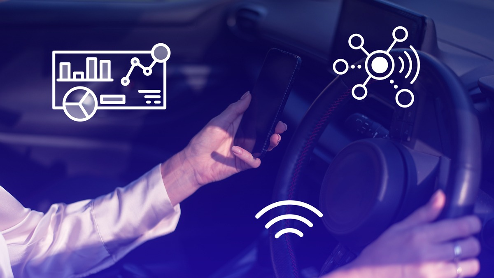

Driver Behavior Analytics System
Driver risk analytics for 300K+ drivers using survival analysis & Bayesian modeling, with real-time assessment APIs.
88% accuracy
10K+ daily req
<200ms
KafkaPyMC3FastAPIPostgreSQL
View case study